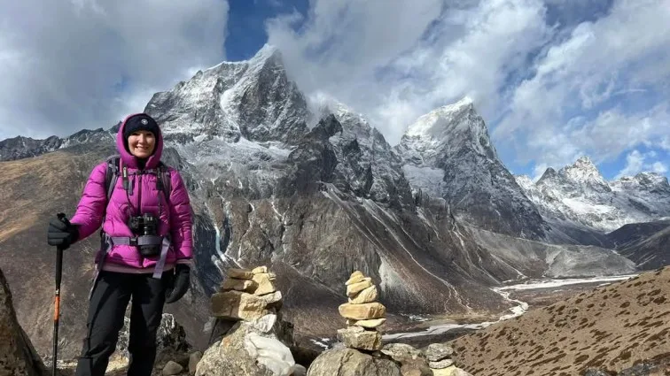
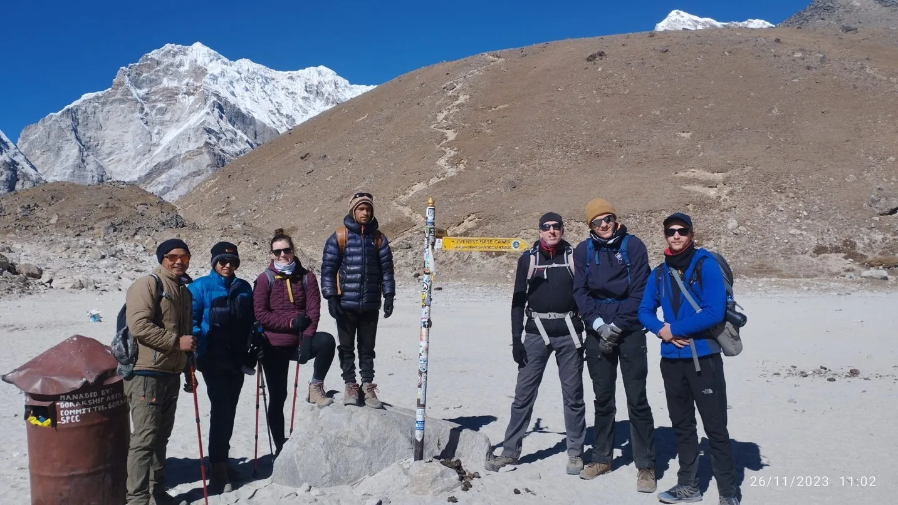
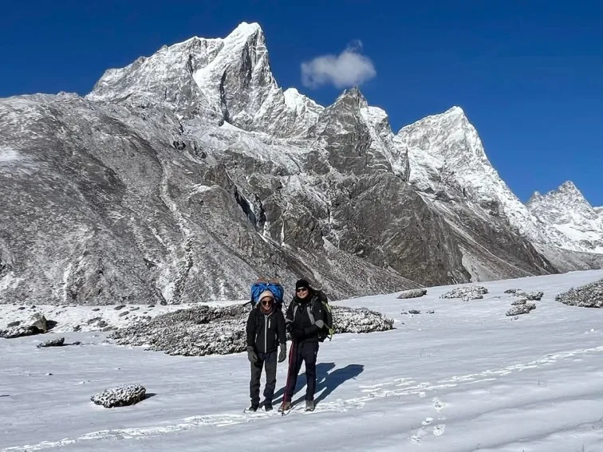
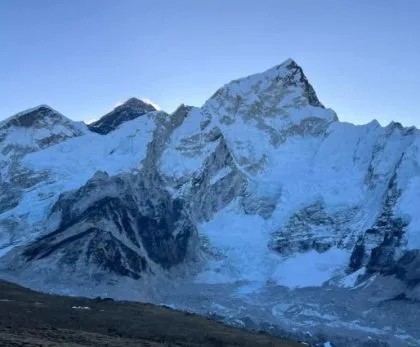
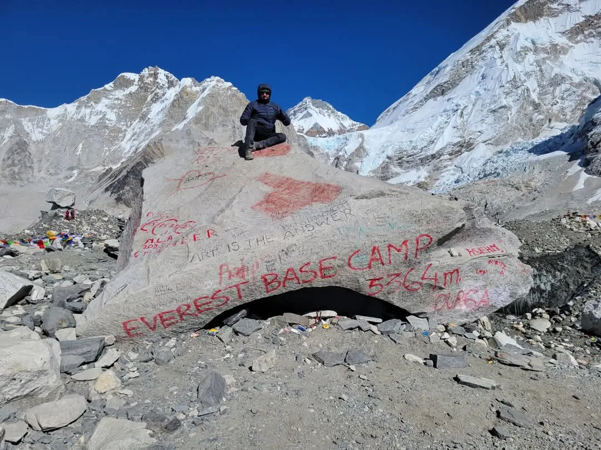

1. Executive Summary: Where Exactly on Earth Is Mount Everest Located?

Ask a casual trivia enthusiast what country Mount Everest is in, and they will almost always answer 'Nepal.' While correct, that answer is only half the truth.
Mount Everest sits directly on the international border dividing Nepal and China (Tibet Autonomous Region).
The boundary line runs along the knife-edge crest of the summit ridge. When a mountaineer stands on the absolute highest point on Earth (8,848.86m / 29,031.7 ft), their right foot is planted in Nepal and their left foot is in Tibet!
Key Geographic Coordinates & Identifiers
- Latitude & Longitude: 27°59'17" N, 86°55'31" E.
- Official Height: 8,848.86 meters (29,031.7 feet) above sea level.
- Continent: Asia (Eurasian / Indian continental suture zone).
- Southern Territory: Sagarmatha National Park, Solukhumbu District, Koshi Province, Nepal.
- Northern Territory: Qomolangma National Nature Reserve, Tingri County, Shigatse, Tibet, China.
2. Nepal vs. Tibet (China): The Border Dividing the Summit

The division of Mount Everest between Nepal and China is formalized by the 1961 Sino-Nepalese Boundary Treaty, signed in Beijing by King Mahendra of Nepal and Premier Zhou Enlai of China.
Under this historic accord, the international frontier was demarcated along the mountain's watershed:
| Geographic Feature | Southern Side (Nepal) | Northern Side (Tibet / China) |
|---|---|---|
| Local Native Name | Sagarmatha ('Forehead of the Sky') | Chomolungma ('Goddess Mother of the World') |
| Administrative Region | Solukhumbu District, Koshi Province | Tingri County, Shigatse Prefecture |
| Conservation Area | Sagarmatha National Park (UNESCO, 1979) | Qomolangma National Nature Preserve (1988) |
| Major Glacier | Khumbu Glacier (17 km long) | Rongbuk Glacier (22 km long) |
| Base Camp Elevation | 5,364 meters (17,598 feet) | 5,180 meters (16,995 feet) |
| Accessibility Mode | Footpath only; 8–10 day trek from Lukla | Paved highway; direct vehicle road access |
Prior to 1960, international border disputes existed over whether Everest belonged exclusively to Nepal or China. Under the visionary 1961 Boundary Treaty, King Mahendra and Premier Zhou Enlai agreed that the international boundary would pass precisely through the summit point, making Everest an enduring symbol of peaceful Himalayan coexistence.
3. Distance from Major Cities: Kathmandu, Lhasa, Delhi & Global Capitals
How far is Mount Everest from major travel gateways? Here is the exact spatial breakdown:
| City & Country | Straight-Line Distance (Air) | Overland / Road Distance | Typical Travel Time to Region |
|---|---|---|---|
| Kathmandu (Nepal) | 160 km / 100 miles | ~280 km (via Tham Danda jeep) | 30-min flight to Lukla + 8 days hike |
| Lhasa (Tibet / China) | 450 km / 280 miles | 650 km via Friendship Highway | 2-day road journey by private vehicle |
| New Delhi (India) | 850 km / 528 miles | N/A (Multi-border transit) | 1.5 hr flight to KTM + Lukla flight |
| Bangkok (Thailand) | 2,200 km / 1,367 miles | N/A | 3.5 hr direct flight to Kathmandu |
| London (United Kingdom) | 7,400 km / 4,600 miles | N/A | 9–11 hrs flight (via Doha/Dubai) to KTM |
| New York (United States) | 12,100 km / 7,518 miles | N/A | 16–18 hrs flight (via Middle East) to KTM |
| Sydney (Australia) | 9,800 km / 6,090 miles | N/A | 14–16 hrs flight (via Singapore/Kuala Lumpur) |
4. The Mahalangur Himal Range & Neighboring 8,000-Meter Giants

Mount Everest does not exist in isolation. It forms the majestic crown of the Mahalangur Himal, a sub-range of the central Himalayas that contains the highest concentration of 8,000-meter peaks on Earth:
- Lhotse (8,516m / 27,940 ft - 4th Highest): Directly connected to Everest via the 7,906-meter South Col ridge. From many angles in Nepal, Everest and Lhotse appear as a single colossal double-headed massif.
- Makalu (8,485m / 27,838 ft - 5th Highest): Located just 19 kilometers southeast of Everest, an isolated four-sided pyramid of sheer black granite.
- Cho Oyu (8,188m / 26,864 ft - 6th Highest): Situated 28 kilometers northwest of Everest on the Nepal-Tibet border, marking the western boundary of the Mahalangur Himal.
- Nuptse (7,861m / 25,791 ft): A dramatic, serrated knife-edge wall that completes the Everest cirque and directly shields the Everest summit from view when standing at South Base Camp.
5. How to Get to Mount Everest from Nepal (The Trekking Route)

Reaching Mount Everest from the southern Nepalese side is a world-renowned wilderness pilgrimage:
- Step 1: Arrive in Kathmandu. Fly internationally into Tribhuvan International Airport (KTM).
- Step 2: Travel to the Trailhead. Take a 30-minute domestic STOL flight to Lukla (2,846m) or take a 4WD Jeep overland to Tham Danda / Paiya.
- Step 3: Trek Through the Khumbu Valley. Hike north along the Dudh Koshi River through Phakding, ascend to the Sherpa capital of Namche Bazaar (3,440m), spend an acclimatization day visiting Hotel Everest View (3,880m), and continue past Tengboche Monastery, Dingboche, and Lobuche.
- Step 4: Reach South Base Camp (5,364m). On Day 8 or 9, reach Gorak Shep and walk out onto the Khumbu Glacier to stand at the iconic Everest Base Camp boulder.
6. How to Get to Mount Everest from Tibet / China (The Driving Route)

Visiting Mount Everest from the northern Tibetan side is a completely different travel experience dominated by high-altitude road touring rather than multi-day trekking:
- Step 1: Arrive in Lhasa. Fly into Lhasa Gonggar Airport or ride the world's highest train on the Qinghai-Tibet Railway.
- Step 2: Drive the Friendship Highway. Travel overland by private tour vehicle past Yamdrok Lake, Gyantse, and Shigatse to Tingri County.
- Step 3: Cross Gawu La Pass (5,210m). This mountain pass offers one of the greatest panoramas on Earth, revealing five 8,000-meter peaks simultaneously (Shishapangma, Cho Oyu, Everest, Lhotse, Makalu).
- Step 4: Arrive at North Base Camp (5,180m). A smooth asphalt road terminates at Rongbuk Monastery, where zero-emission electric shuttle buses transport visitors to the official North Face viewing platform.
7. The Two Everest Base Camps: South (Nepal) vs. North (Tibet)
The contrast between the two Base Camps could not be more stark:
| Factor | South Base Camp (Nepal) | North Base Camp (Tibet / China) |
|---|---|---|
| Altitude | 5,364 meters (17,598 feet) | 5,180 meters (16,995 feet) |
| Physical Demand | Demanding 65 km (40 mile) multi-day hike | Minimal physical effort (Vehicle transport) |
| Everest Summit Visibility | Not visible from Base Camp (blocked by Nuptse) | Spectacular, unobstructed direct view of full North Face |
| Atmosphere & Culture | Vibrant Sherpa lodge culture, prayer flags, bakeries | Vast barren plateau, Tibetan nomadic guesthouses, Rongbuk Gompa |
| Permit Bureaucracy | Simple; permits obtained in Kathmandu/trail | Complex; Chinese visa + Tibet Travel Permit (TTP) via tour agency |
8. Inside Sagarmatha National Park: Zones, Valleys & Rivers

On the Nepalese side, Mount Everest is protected within Sagarmatha National Park, established in 1976 and inscribed as a UNESCO World Heritage Site in 1979:
- Vertical Gradient: The park spans a vertical rise of 6,000 meters—from the Dudh Koshi river valley near Monjo (2,845m) to the summit of Everest (8,848.86m).
- The Glacial Arteries: Over 60% of the park's upper terrain consists of barren rock and permanent ice. The Khumbu Glacier (17 km long) begins in the Western Cwm beneath Everest's South Col and carves its way down to Dughla.
- Strict Ecological Protection: Roads, motorized vehicles, and industrial exploitation are strictly banned inside the park, preserving the pristine footpath culture of the Khumbu.
9. Where Can You Actually See Mount Everest? The Best Viewpoints

A common surprise for first-time visitors to Nepal is that you cannot see Mount Everest from Everest Base Camp itself! The colossal bulk of Nuptse and the West Ridge blocks the summit from the glacier floor.
To actually witness the summit in all its glory, you must visit these premier viewpoints:
| Viewpoint Landmark | Altitude | Distance to Everest | Why It Is Special |
|---|---|---|---|
| Kala Patthar (Nepal) | 5,545m / 18,192ft | ~10 km | The #1 classic close-up view; unblocked summit pyramid, South Col, and Khumbu Icefall. |
| Gokyo Ri (Nepal) | 5,357m / 17,575ft | ~24 km | Breathtaking lake panorama; reveals four 8,000m giants (Everest, Lhotse, Makalu, Cho Oyu). |
| Hotel Everest View (Nepal) | 3,880m / 12,730ft | ~30 km | World's highest luxury terrace; sip hot coffee with full views of Everest and Ama Dablam. |
| Tengboche Monastery (Nepal) | 3,867m / 12,687ft | ~28 km | Spiritual framed vista with Buddhist stupas and prayer flags in the foreground. |
| Gawu La Pass (Tibet) | 5,210m / 17,093ft | ~50 km | Roadside view from Tibet showing the entire Himalayan arc including Everest's North Face. |
Many travelers arrive at South Base Camp expecting a towering view of the summit pyramid, only to realize the summit is hidden behind the massive 7,861m wall of Nuptse! To see the true summit and ice plume, you must climb the black rock ridge of Kala Patthar (5,545m) above Gorak Shep.
10. Permits, Visas & Entry Regulations (Nepal vs. Tibet)
Visiting Mount Everest requires navigating the legal entry requirements of the respective host nation:
Entering via Nepal (Simple & Flexible)
- Tourist Visa on Arrival at Kathmandu Airport ($30–$50 USD).
- Sagarmatha National Park Entry Permit (NPR 3,390 / ~$26 USD).
- Khumbu Pasang Lhamu Municipal Entry Permit (NPR 3,000 / ~$23 USD).
- Can be arranged easily upon arrival with licensed local agency.
Entering via Tibet (Strict & Regulated)
- Chinese Group Visa or Individual Visa.
- Tibet Travel Permit (TTP) issued by Tibet Tourism Bureau.
- Alien's Travel Permit (ATP) & Military Permit for border zone.
- Independent travel is illegal; must book a fully guided licensed tour 30+ days in advance.
11. Weather Patterns & Seasonal Windows: When Is Everest Accessible?

The accessibility and beauty of Mount Everest follow the rhythm of the Indian Ocean monsoon:
| Season | Months | Weather & Visibility | Best For |
|---|---|---|---|
| Autumn (Peak Season) | Late Sept – Nov | Crisp, dry, crystal-clear blue skies; moderate daytime temperatures | Trekking to EBC, photography, best mountain views |
| Spring (Climbing Season) | March – May | Warmer days, blooming rhododendrons below 3,500m; afternoon valley clouds | Summit climbing expeditions, Island Peak climbs, EBC treks |
| Winter (Off-Peak) | Dec – Feb | Sub-zero freezing nights (-15°C); sharpest optical clarity; empty trails | Everest View Panorama treks, crowd-free photography |
| Monsoon (Low Season) | June – August | Heavy rainfall in Nepal; trails muddy; mountain shrouded in monsoon clouds | Tibet overland route (Tibet sits in the dry Himalayan rain shadow) |
12. Why Everest’s Remote Location Makes It So Dangerous
Mount Everest is not only dangerous because of its height; it is lethal because of its sheer geographic remoteness:
- No Road Access on the Nepal Side: There is not a single motorable road within 60 kilometers of Everest Base Camp in Nepal. If a trekker or climber suffers high-altitude pulmonary edema, they cannot be picked up by an ambulance.
- Aviation Ceilings: At 5,364m, the air is so thin that standard helicopters cannot generate sufficient rotor lift. Only specialized high-altitude rescue helicopters (such as the Airbus H125 / AS350 B3e) can land, and they cannot operate at night or in cloud cover.
- Cyclonic Storms: Low-pressure weather systems originating in the Bay of Bengal can travel 600 kilometers inland and slam into Everest within hours, dropping temperatures by 30°C and generating blinding whiteouts.
13. Naming History: Peak XV, Sir George Everest, Sagarmatha & Chomolungma
The naming of the world's highest mountain carries a rich cartographic history:
- Chomolungma: Documented on a map published in Paris as early as 1733 by French cartographer D'Anville, based on earlier surveys by Tibetan lamas. It means 'Goddess Mother of the World' in Tibetan.
- Peak XV (1849): During the Great Trigonometrical Survey of India, British surveyors measuring peaks from 200 kilometers away in the plains of Bihar labeled the distant snowy pyramid 'Peak XV'.
- Calculation of Highest Peak (1852): Indian mathematician Radhanath Sickdhar calculated that Peak XV was higher than Kangchenjunga, making it the highest point on Earth.
- Mount Everest (1865): Andrew Waugh, the Surveyor General of India, proposed naming the mountain after his predecessor, Sir George Everest. Sir George actually protested, noting that native peoples could not pronounce his surname and that local indigenous names should be prioritized!
- Sagarmatha (1956): Nepalese historian and scholar Baburam Acharya popularized the Nepali name Sagarmatha, derived from Sanskrit words meaning 'Forehead of the Sky' or 'Goddess of the Sky'.
14. Frequently Asked Questions: Where Is Mount Everest?
What country is Mount Everest in?
Mount Everest is located on the international border between two countries: Nepal and China (Tibet Autonomous Region). The southern slope is in Nepal's Solukhumbu District, while the northern slope is in Tibet's Tingri County. The summit itself straddles the exact border line.
What continent is Mount Everest in?
Mount Everest is located on the continent of Asia, situated in the central Himalayas within the sub-mountain system known as the Mahalangur Himal.
What are the GPS coordinates of Mount Everest?
The exact geographic coordinates of the summit of Mount Everest are 27°59'17" N latitude and 86°55'31" E longitude.
How far is Mount Everest from Kathmandu?
In a straight air line, Mount Everest is approximately 160 kilometers (100 miles) northeast of Kathmandu, Nepal's capital city. By foot and road, the journey involves a 30-minute flight to Lukla followed by roughly 65 kilometers of mountain trail walking.
Can you see Mount Everest from Kathmandu?
On exceptionally clear winter mornings after rainfall has washed away atmospheric dust, you can catch a tiny glimpse of Everest's summit plume from the high southern hills of the Kathmandu Valley rim, such as Chandragiri Hills or Nagarkot. However, mountain flights or trekking are necessary for meaningful views.
Which side of Mount Everest is better to visit: Nepal or Tibet?
It depends on your travel style. Nepal offers the classic, active multi-day trek through rich Sherpa cultural villages, suspension bridges, and pine forests to South Base Camp (5,364m). Tibet allows you to drive directly to North Base Camp (5,180m) by vehicle on paved roads, offering a full, unobstructed view of the sheer North Face without multi-day hiking.
Can you see Mount Everest from Everest Base Camp?
No, not from the South Base Camp in Nepal! The towering ridge of Nuptse blocks the summit pyramid from the glacier floor. Trekkers climb the nearby ridge of Kala Patthar (5,545m) to get the iconic unobstructed summit view. However, on the Tibet side, Everest's entire North Face is directly visible from North Base Camp.
What is the nearest airport to Mount Everest?
The primary gateway airport on the Nepal side is Tenzing-Hillary Airport in Lukla (LUK), located at 2,846m (9,337 ft). Syangboche airstrip (3,780m) is closer but does not operate regular commercial passenger flights. On the Tibet side, the nearest major commercial airport is Shigatse Peace Airport (RKZ), located roughly 300 km away.

Ready to Experience the Himalayas?
Whether you are preparing for high-altitude trekking, cultural circuits, or alpine summit expeditions, start planning a bespoke journey tailored to your fitness, travel season, and style.